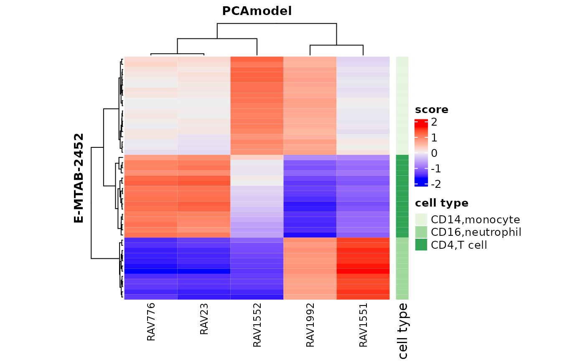

How preprocessing affects scores from GenomicSuperSignature
Sehyun Oh
2021-06-09
Source:vignettes/prepare_Inputs/preprocess_on_score.Rmd
preprocess_on_score.RmdSetup
RAVmodel
This RAVmodel is built using top 20 PCs of 536 studies. The number of cluster was decided by d=2.25 and MSigDB C2 gene sets are used for GSEA-based annotation.
data.dir <- system.file("extdata", package = "GenomicSuperSignaturePaper")
RAVmodel <- readRDS(file.path(data.dir, "RAVmodel_C2.rds"))
RAVmodel## class: PCAGenomicSignatures
## dim: 13934 4764
## metadata(7): cluster size ... updateNote version
## assays(1): RAVindex
## rownames(13934): CASKIN1 DDX3Y ... CTC-457E21.9 AC007966.1
## rowData names(0):
## colnames(4764): RAV1 RAV2 ... RAV4763 RAV4764
## colData names(4): RAV studies silhouetteWidth gsea
## trainingData(2): PCAsummary MeSH
## trainingData names(536): DRP000987 SRP059172 ... SRP164913 SRP188526
updateNote(RAVmodel)## [1] "536 refine.bio studies/ top 90% varying genes/ GSEA with MSigDB C2"Example data: E-MTAB-2452
Normalized
The isolated immune cell data (ArrayExpress: E-MTAB-2452) is normalized using Single Channel Array Normalization (SCANfast implementation) and Brainarray v22.0.0.
dat_dir <- "~/data2/[archive]Genomic_Super_Signature/multiPLIER/data"
annot.dat <- readr::read_tsv(file.path(dat_dir, "E-MTAB-2452_hugene11st_SCANfast_with_GeneSymbol.pcl")) %>% as.data.frame
rownames(annot.dat) <- annot.dat[, 2]
dataset <- as.matrix(annot.dat[, 3:ncol(annot.dat)])
rownames(dataset) <- annot.dat$GeneSymbol
dataset[1:2, 1:4]## CD14_triad0058_1.CEL CD14_triad0058_2.CEL CD14_triad0058_3.CEL
## A1BG 1.154439e-01 0.17987252 0.17031624
## NAT2 -7.464545e-06 -0.09915562 -0.02097987
## CD14_triad0058_4.CEL
## A1BG 0.1767473
## NAT2 -0.1269907Normalization usually means to scale a variable to have a values between 0 and 1, while standardization transforms data to have a mean of zero and a standard deviation of 1.

Validation
val_all <- validate(dataset, RAVmodel)
heatmapTable(val_all)Score
scoreHM <- calculateScore(dataset, RAVmodel)

keywords <- "CD4|monocyte|neutrophil"
findSignature(RAVmodel, keywords)## # of keyword-containing pathways Freq
## 1 0 4721
## 2 1 40
## 3 2 3
findSignature(RAVmodel, keywords, k = 2)## [1] 7 1551 3297
subsetEnrichedPathways(RAVmodel, 1551, n = 5)## DataFrame with 5 rows and 1 column
## RAV1551
## <character>
## Up_1 REACTOME_NEUTROPHIL_..
## Up_2 THEILGAARD_NEUTROPHI..
## Up_3 ALTEMEIER_RESPONSE_T..
## Up_4 VERHAAK_AML_WITH_NPM..
## Up_5 VERHAAK_GLIOBLASTOMA..Centered
Distribution in histogram

## centering doesn't affect validation result
validated_ind <- validatedSignatures(val_all, num.out = 5, indexOnly = TRUE)
scoreHM_centered <- calculateScore(dataset_centered, RAVmodel)Centering doesn’t affect scores.
head(scoreHM[,validated_ind])## RAV23 RAV1551 RAV1552 RAV1992 RAV776
## CD14_triad0058_1.CEL 0.15014619 -0.131418860 1.237262 0.6737490 0.079363215
## CD14_triad0058_2.CEL -0.02134346 0.009105929 1.048683 0.6975598 -0.023896647
## CD14_triad0058_3.CEL 0.06870722 -0.061326057 1.145391 0.6780799 0.007445651
## CD14_triad0058_4.CEL 0.05940305 -0.089278201 1.123546 0.6369002 0.101138469
## CD14_triad0058_5.CEL 0.10600594 -0.066649244 1.235938 0.7209257 0.022297764
## CD14_triad0058_6.CEL 0.08358457 -0.092049167 1.224873 0.6921574 0.137148534
head(scoreHM_centered[,validated_ind])## RAV23 RAV1551 RAV1552 RAV1992 RAV776
## CD14_triad0058_1.CEL 0.15014619 -0.131418860 1.237262 0.6737490 0.079363215
## CD14_triad0058_2.CEL -0.02134346 0.009105929 1.048683 0.6975598 -0.023896647
## CD14_triad0058_3.CEL 0.06870722 -0.061326057 1.145391 0.6780799 0.007445651
## CD14_triad0058_4.CEL 0.05940305 -0.089278201 1.123546 0.6369002 0.101138469
## CD14_triad0058_5.CEL 0.10600594 -0.066649244 1.235938 0.7209257 0.022297764
## CD14_triad0058_6.CEL 0.08358457 -0.092049167 1.224873 0.6921574 0.137148534